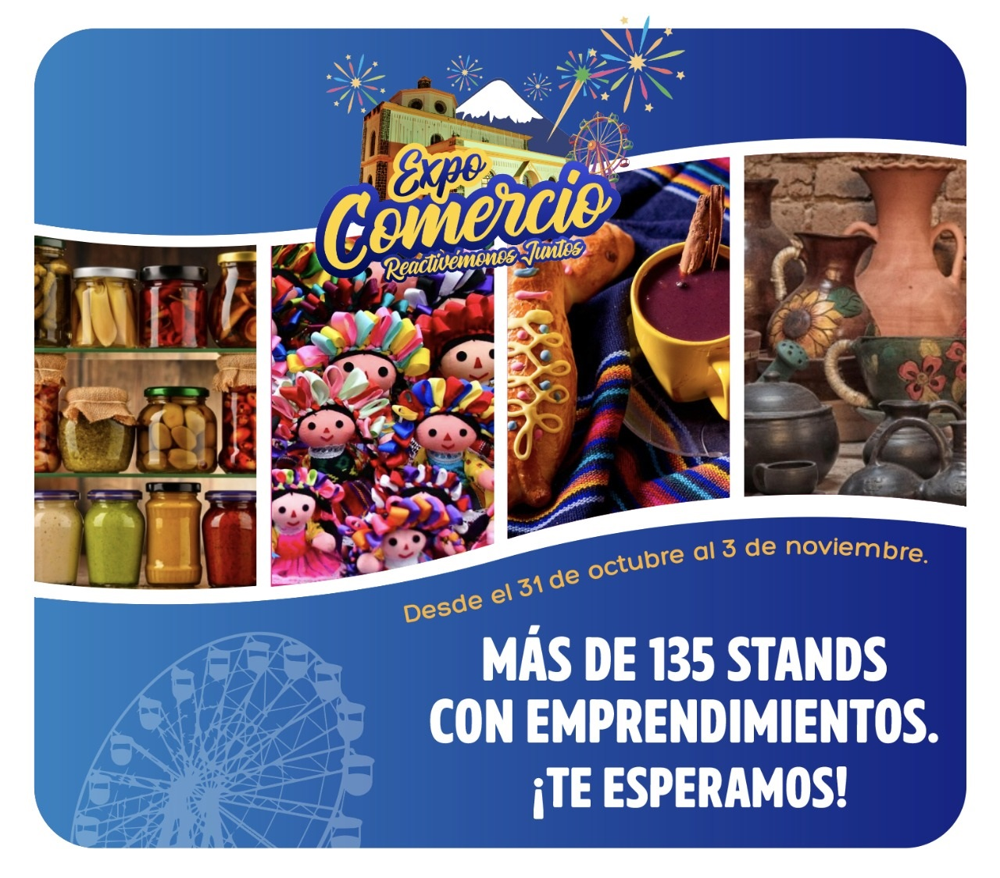

FERIA LATACUNGA
INICIO
FORMULARIO
EN SUS FIESTAS LATACUNGA PRESENTA

INFORMACION IMPORTANTE:
Entre los organizadores de la feria existe gran expectativa en la Expo-Cotopaxi 2022 que vuelve a darse después de dos años por razones de la pandemia, hecho que permitirá buscar la reactivación económica de la ciudad y provincia. Esta será una gran oportunidad para brindar a los visitantes diferentes tipos de productos que genera Cotopaxi, los mismos que permitieron durante la pandemia a la población mantenerse abastecida de productos de primera necesidad, además que él fue el sector que no paro a pesar de la crisis sanitaria.
Mas Informacion
NUESTROS AUSPICIANTES:
Telf:+ 593 (03) 2385 706
DIRECCION:Sánchez de Orellana y Ramírez Fita
Soporte:info@latacunga.gob.ec